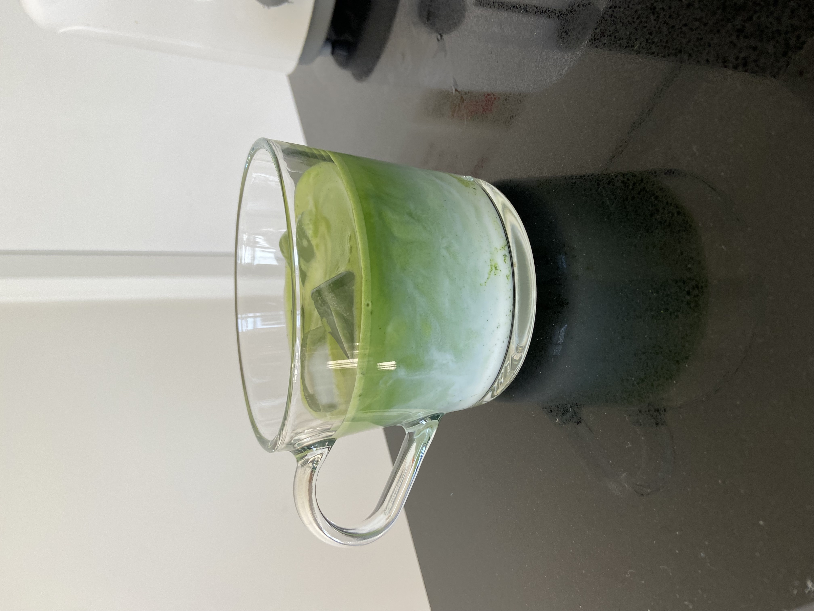
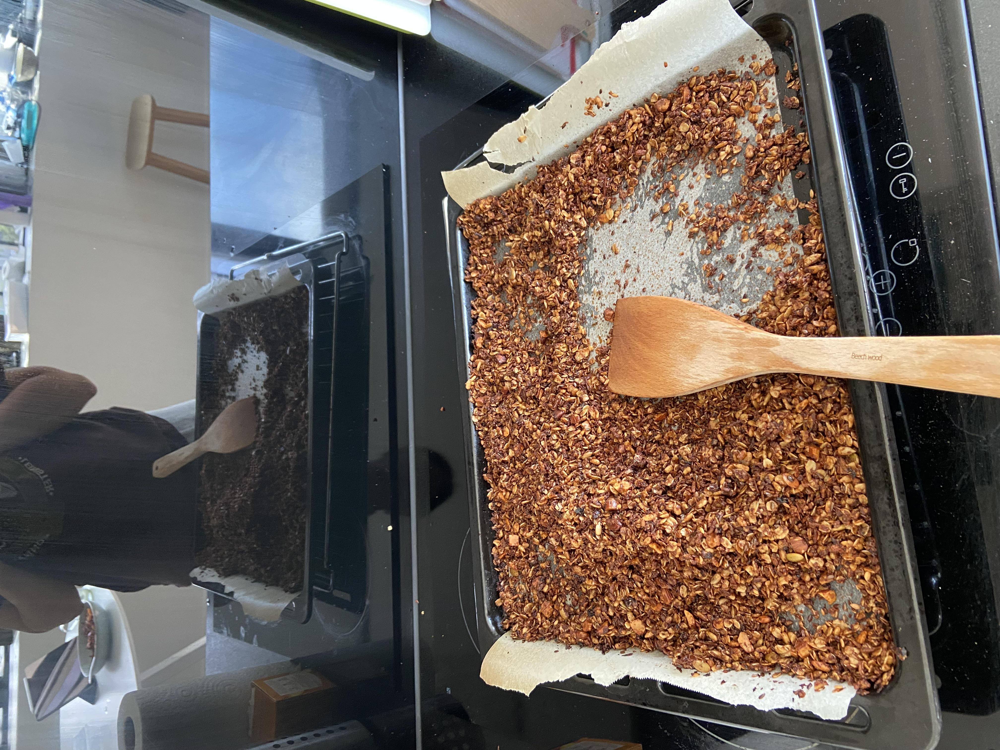
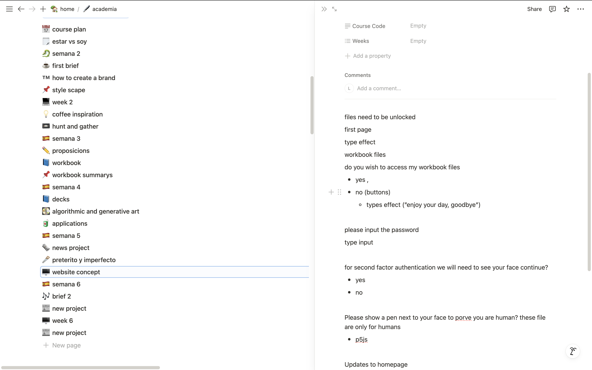
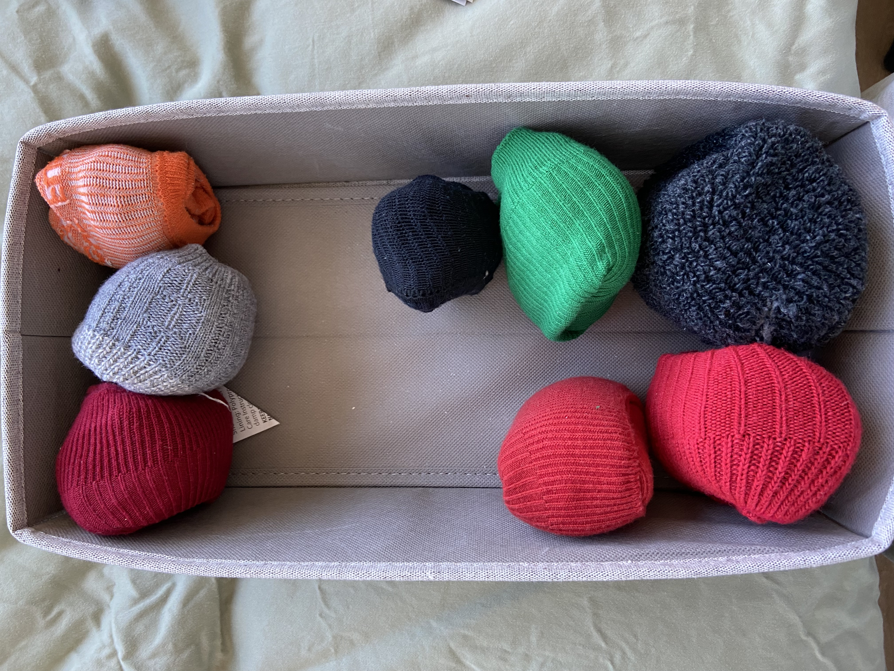
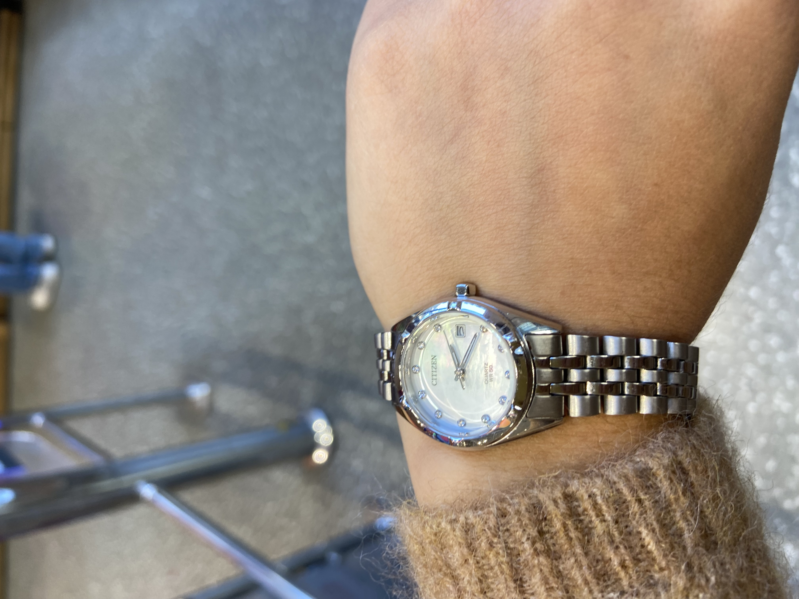
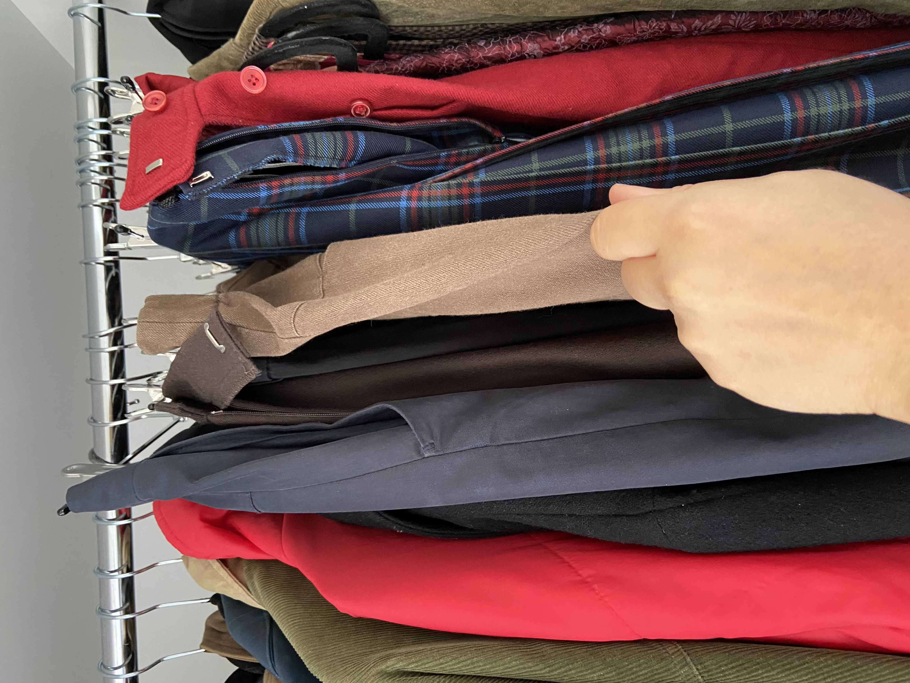
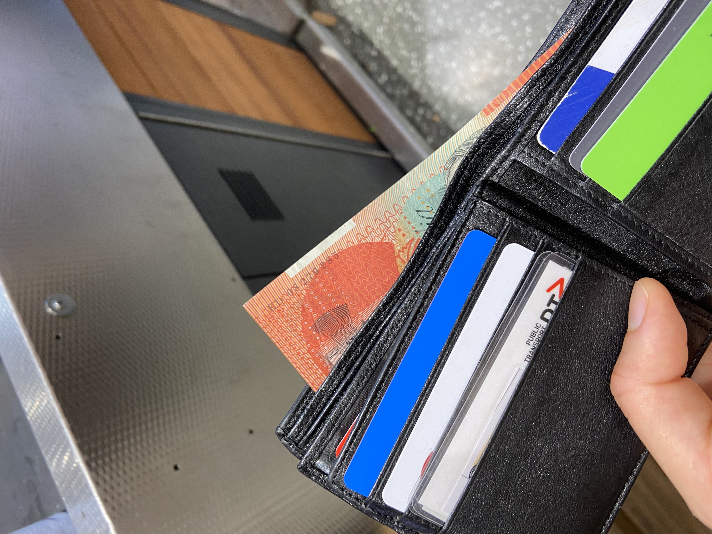
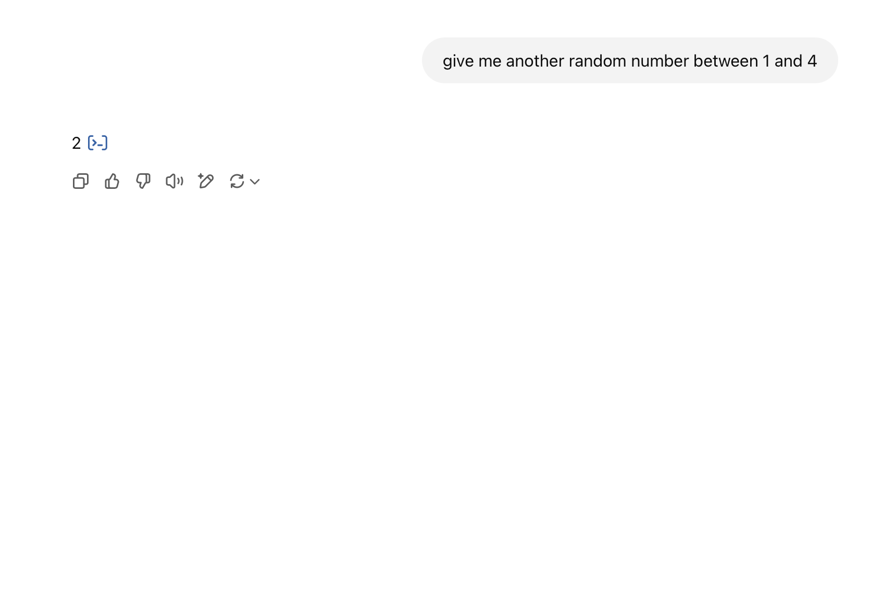
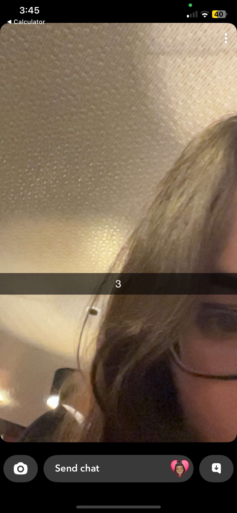
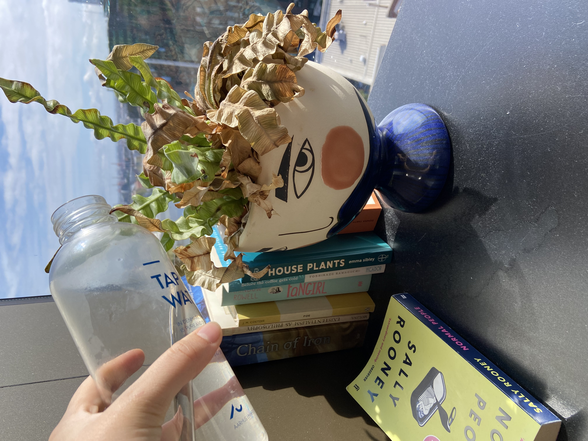

FILE: WEEK 4
HUNTNGATHER

MONUMENT VALLEY is a mobile puzzle game which follows the story of princess as she completes puzzles to discover monuments and unravels the story of the valley. It was one of first mobile games to focus on the visuals and scenery of gameplay. It features meticulously crafted illustrated scenery that induces a mediative and calming gameplay.
The visuals were designed by Lili Ibrahim. She was inspired by notions of conflict and contrast: 3D objects and 2D illustration, nature and city, slight ugliness and juxtaposition. She applied methods inspired by matisse’s cut out placing physical cut outs of illustration on top of printed screen shots. This created a combination of 3D and 2D animation.
This multimedia approach and the astoundingly peaceful resulting design, despite internal conflict is very impressive. Her approach is something specifically I would be interested in approaching in my own work.

BRUNO SIMON is a web developer based in Paris. He uses a unique approach to his portfolio, utilising his developer skills to create an interactive simulation which users can navigate to discover his resume. Users control their movement using the arrows keys to move a car around directed by street signs in the game. Other keys can also be used to brake, boost, honk and control the sound.
Users can also navigate the space using the mouse or touchpad for faster, more controlled view. This view was likely required for accessibility, as the key controls can be quite difficult to use. They are not intuitive and do not provide a very fast view. This reduces agency which is required to view a portfolio and subsequently a faster and easier navigation is required.
This UNKNOWN GAME is an an ARG (Alternative Reality Game) composed of puzzles with a recurring theme of secrets and deception. The starting page is composed of flashing background with multiple touch points a player can interact with. Based on which touch points a player interacts with and how they interact they will experience a unique gameplay. They can interact with the game using inputs, clicking and other typical interaction on a desktop webpage. The game maintains a aesthetic similar to web 2 and consistently engage a variety of sense through the different visual and audio components of the puzzles.
LOOK
Access one or more of the following web works or series and describe the work and interactive elements you find
CHOSEN WORK: Angelo Pleasses

Angelo Pleasses is a performance and digital artist. His work combines digital and spiritual elements to challenge binaries (ie. online and offline) and examine what spirituality resonates with “the networked system of contemporary life”.
WORK: rituals, videos, artist residencies, artist’s books, interactive websites, quilted sculptures, neon installations, educational projects
- Menu animation, the menu links fly in from the right and be caught in the write at intervals. This prevents users from immediately interacting with the page and force them look at the main page before interacting.
- Cursor, the cursor uses a custom cursor image which leaves a trail when used in the menu bar. This creates a fun visual effect which can be created p5.js or javascript within HTML.
- Background animation, the background image features a parallax effect similar to a kaleidoscope triggered by the mouse movements.
- Dropdowns are used within the sidebar menu to hide and reveal content in the menu. This reduces the amount of content and makes it easier to consume.
SEMINAR
Wot is Generative Design
Generative art describes to any art practice where the artist creates a process such as a set of natural language rules - instructional art -, a computer program - algorithmic art -, a machine or other procedural invention. Which is then set into motion with some degree of autonomy contributing to or resulting in completed artwork.
EXAMPLES: Sol Lewitt (Wall Drawing Boston Museum), Yoko Ono (A+B Painting)
SLAVE TO THE ALGORITHM
This activity spanned 12 hours in one day and involved at least 10 of our daily activities being governed by chance. For each activity the rules/choices had to be clearly set before the activity started, and before the element of chance was introduced. We were required to document the rules, chance mechanism and outcome
-
I tossed a coin to decide whether to matcha or tea in the morning (heads for tea and tails for matcha). It landed on tails.
 -
I tossed a coin to decide whether I have granola or oatmeal for breakfast (Heads for granola and tails for oatmeal). It landed on heads.
 -
I tossed coin to decide whether I should write on my laptop or analog (heads for my laptop and tails for analog). It landed on heads.
 -
I asked chat GPT to give me random number between 1 and 8 and then counted from the front of my sock drawer to select a pair of socks.The number was 4.
 -
I asked a friend for random number between 1 and 4. The resulting number would be hour in which I would got to the shops. They said 2.
 -
I asked chat gpt to give me random number between 1-7 and then counted to select a pair of pants in my wardrobe. The number was 4.
 -
I tossed a coin to decide to pay in cash or card before going to the shops (Heads for cash and tails for card). It landed on heads.
 -
I asked chat gpt to give me number between 1 and 4 to decided which kusuma photo to do for my sketch counting from the top of Milanote. It said 2.
 -
I asked my friend to give me a random number between 1 and 4 to decide when I should take a study break. They said 3.
 -
I flipped a coin to decide whether I should water my plant (heads for yes and tails for no). It was heads.

LET'S GO
In this class, we learnt the basics of P5 including setting up a sketch, the anatomy of a sketch and drawing shapes, colours and texts. After class we each created a self portrait and a sketch inspired by Kusama. See files next to folder
WEBSITE CHECK
This week I focused on researching ways to make an infinite rotating gallery to imitate the effect from Parametro studio.